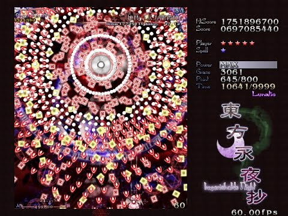
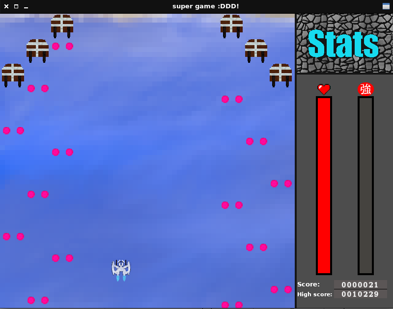

About DENG project
Who develops DENG?
DENG is developed by only one person. However everyone is welcome to submit pull requests in Github.
How I began developing DENG?
DENG development began in August 2020. Back then I had little to no knowledge about computer graphics, especially 3D graphics, since all I had really done was tinker with SFML, which is a 2D graphics library. My first goal was to create a Touhou Project like bullet hell shooter game, but without any fancy audio and magic spells. Well I kinda made the game and it worked somewhat. The only problem was that the codebase was a huge unmaintainable mess of a spaghetti. The source code for this incomplete messy game can be found here
Expetations
Screenshot from Touhou Project 12
Reality
Screenshot from project_gemu
Eventually I abondoned the project and started working on creating the game engine instead. At that time
I tried using the same SFML library I had used previously and I even managed to create somewhat functioning
editor. The only problem was that the so called editor was limited to CLI commands and 2D graphics only.
Then I discovered the magic of Vulkan. As it might be known, Vulkan is not the most beginner friendly API out there.
Even drawing a simple triangle to the screen requires at least 1000 lines of code. Luckally there were some really
good tutorials out on the internet about the Vulkan API (one that I used for the learning).
Finally I started implementing my own Vulkan renderer and after about a week of tinkering with Vulkan I managed to get a
triangle to the screen. Once the main trouble of setting Vulkan renderer up was done I started working on DENG itself.
Due to the limited knowledge about linear algebra my first implementation of first person camera system came out broken, since
I could not figure out for some time how to perform correct rotations around x and z-axes. Eventually I found out that my
view matrix calculations were done incorrectly. In that implementation x and z rotation matrices were calculated from
y rotation using following formulas: x_rot = cos(y_rot); z_rot = -sin(y_rot) and then rotation matrices were multiplied with
camera transformation matrix. All I needed to do was just to perform rotation matrix multiplications on camera up/right/forward
side vectors and then add them to the transformation matrix, which also was the view matrix.